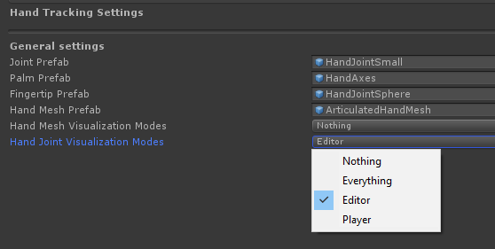
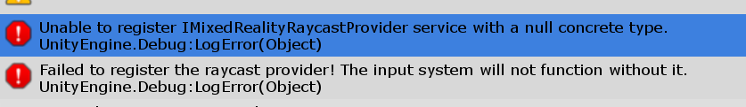
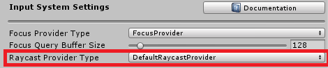

更新Microsoft混合现实工具包
将2.1.0更新为2.2.0
2.2.0中的API更改
IMixedRealityBoundarySystem.Contains
该方法以前采用了特定的，Unity定义的实验枚举。现在，它接受一个与Unity枚举相同的MRTK定义的枚举。此更改有助于为Unity的未来边界API准备MRTK。
MixedRealityServiceProfileAttribute
为了更好地描述支持概要文件的需求，MixedRealityServiceProfileAttribute已被更新，以添加一个排除类型的可选集合。作为此更改的一部分，ServiceType属性已从Type更改为Type[]并重命名为RequiredTypes。
第二个属性，也添加了ExcludedTypes。
将2.0.0更新到2.1.0
2.1.0中的API更改
BaseNearInteractionTouchable
已对BaseNearInteractionTouchable进行了修改，以将OnValidate方法标记为虚拟方法。扩展BaseNearInteractionTouchable的类（例如：NearInteractionTouchableUnityUI）已更新，以适应此更改。
ColliderNearInteractionTouchable
ColliderNearInteractionTouchable类已被弃用。请更新代码引用以使用BaseNearInteractionTouchable。
IMixedRealityMouseDeviceManager
添加
ImixedRealityMouseDeviceManager已添加CursorSpeed和WheelSpeed` 属性。这些属性允许应用程序指定乘数值，通过该乘数值将分别缩放光标和滚轮的速度。
这是一项重大更改，需要修改现有的鼠标设备管理器(mouse device manager)实现。
[!注意] 此更改与2.0.0版本不向后兼容。
弃用
MouseInputProfile 属性已被标记为过时，并且将从Microsoft混合现实工具包的将来版本中删除。建议应用程序代码不再使用此属性。
Interactable
以下方法和属性已被弃用，并且将从Microsoft混合现实工具包的将来版本中删除。建议按照包含在“过时”属性中并显示在控制台中的指南更新应用程序代码。
public bool Enabledpublic bool FocusEnabledpublic void ForceUpdateThemes()public bool IsDisabledpublic bool IsToggleButtonpublic int GetDimensionIndex()public State[] GetStates()public bool RequiresFocuspublic void ResetBaseStates()public virtual void SetCollision(bool collision)public virtual void SetCustom(bool custom)public void SetDimensionIndex(int index)public virtual void SetDisabled(bool disabled)public virtual void SetFocus(bool focus)public virtual void SetGesture(bool gesture)public virtual void SetGestureMax(bool gesture)public virtual void SetGrab(bool grab)public virtual void SetInteractive(bool interactive)public virtual void SetObservation(bool observation)public virtual void SetObservationTargeted(bool targeted)public virtual void SetPhysicalTouch(bool touch)public virtual void SetPress(bool press)public virtual void SetTargeted(bool targeted)public virtual void SetToggled(bool toggled)public virtual void SetVisited(bool visited)public virtual void SetVoiceCommand(bool voice)
NearInteractionTouchableSurface
添加了NearInteractionTouchableSurface类，现在用作NearInteractionTouchable和NearInteractionTouchableUnityUI的基类。
2.1.0中的配置文件更改
手动跟踪配置文件
现在，手部网格和关节可视化具有单独的编辑器和播放器设置。手动跟踪配置文件已更新，可以将这些可视化(visualizations)设置为；Nothing, Everything, Editor or Player.

自定义手部跟踪配置文件可能需要更新才能与版本2.1.0一起正常使用。
[!注意] 此更改与2.0.0版本不向后兼容。
输入模拟配置文件
输入模拟系统已升级，可以更改输入模拟配置文件中的一些设置。某些更改无法自动迁移，用户可能会发现配置文件正在使用默认值。
配置文件中的所有KeyCode和鼠标按钮绑定都已替换为通用的KeyBinding 结构，该结构存储绑定的类型（键或鼠标）以及实际的绑定代码（分别为KeyCode或鼠标按钮编号）。该结构具有自己的检查器，该检查器可以统一显示，并提供
auto-bind工具，可通过按相应的键而不是从庞大的下拉列表中进行选择来快速设置键绑定。- FastControlKey
- ToggleLeftHandKey
- ToggleRightHandKey
- LeftHandManipulationKey
- RightHandManipulationKey
MouseLookToggle以前作为InputSimulationMouseButton.Focused包含在MouseLookButton枚举中。现在，它是一个单独的选项。启用后，相机将在释放按钮后保持鼠标旋转，直到按下退出键。HandDepthMultiplier的默认值已从0.1降低到0.03，以适应输入模拟的某些更改。如果滚动时相机移动太快，请尝试降低此值。旋转手的键已删除，手的旋转现在也由鼠标控制。同时按住
HandRotateButton（Ctrl）和左/右手操作键（LShift / Space）即可启用手旋转。新轴“ UpDown”已引入到输入轴列表中。这可控制摄像机在垂直方向上的移动，默认为Q / E键以及控制器触发按钮。
有关这些更改的更多信息，请参见输入模拟服务文章。
Mouse data provider 配置文件
鼠标数据提供者配置文件已更新，以显示新的CursorSpeed 和WheelSpeed 属性。现有的自定义配置文件将自动提供默认值。保存配置文件后，这些新值将被保留。
Controller mapping 配置文件
2.1.0中已更新了某些轴和输入类型，尤其是在OpenVR平台周围。升级时，请确保选择 MixedRealityToolkit ->Utilities -> Update -> Controller Mapping Profiles这将使用更新的轴和数据来更新所有自定义控制器映射配置文件，同时使自定义分配的输入操作保持不变。
将RC2更新到2.0.0
在Microsoft Mixed Reality Toolkit的RC2和2.0.0版本之间，进行了可能影响现有项目的更改。本文档介绍了这些更改以及如何将项目更新到2.0.0版本。
API changes in 2.0.0
自RC2发行以来，已经进行了许多API更改，其中一些更改可能会破坏现有项目。以下各节描述了RC2和2.0.0版本之间发生的更改。
MixedRealityToolkit
MixedRealityToolkit对象上的以下公共属性已被弃用。
RegisteredMixedRealityServices不再包含注册的扩展服务和数据提供程序的集合。
要访问扩展服务，请使用MixedRealityServiceRegistry.TryGetService<T>。要访问数据提供者，请将服务实例强制转换为IMixedRealityDataProviderAccess 并使用 GetDataProvider<T>.
使用 MixedRealityServiceRegistry或 CoreServices 代替以下不推荐使用的属性
ActiveSystemsInputSystemBoundarySystemCameraSystemSpatialAwarenessSystemTeleportSystemDiagnosticsSystemSceneSystem
CoreServices
CoreServices类是在MixedRealityToolkit对象中找到的静态系统访问器（例如BoundarySystem）的替换。
[!重要]
MixedRealityToolkit系统访问器已在2.0.0版中弃用，并将在以后的MRTK版本中删除。
以下代码示例说明了旧模式和新模式。
// 旧
GameObject playAreaVisualization = MixedRealityToolkit.BoundarySystem?.GetPlayAreaVisualization();
// 新
GameObject playAreaVisualization = CoreServices.BoundarySystem?.GetPlayAreaVisualization();
如果将应用程序更改为使用其他服务注册商（例如：实验性服务管理器之一），则使用新的CoreSystem类将确保您的应用程序代码无需更新。
IMixedRealityRaycastProvider
通过添加IMixedRealityRaycastProvider，更改了输入系统配置配置文件。如果您具有自定义配置文件，则在运行应用程序时，您可能会在下图中收到错误。

要解决这些问题，请在输入系统配置文件中添加IMixedRealityRaycastProvider实例。

Event System
ImixedRealityEventSystem旧的API方法Register和Unregister已被标记为过时。保留它们是为了向后兼容。InputSystemGlobalListener已被标记为过时。它的功能没有改变。BaseInputHandler基类已从InputSystemGlobalListener更改为InputSystemGlobalHandlerListener。对于BaseInputHandler的任何继承来说，这是一个重大变化。
更改原因
旧的事件系统API Register 和Unregister可能会在运行时导致多个问题，主要是：
- 如果组件注册了全局事件，它将接收所有类型的全局输入事件。
- 如果对象上的组件之一注册了全局输入事件，则该对象上的所有组件将接收所有类型的全局输入事件。
- 如果同一对象上的两个组件注册到全局事件，然后在运行时禁用一个组件，则第二个组件将停止接收全局事件。
新的API RegisterHandler和UnregisterHandler：
- 提供一个明确的粒度控制，以控制哪些输入事件应在全局范围内侦听，哪些应基于焦点。
- 允许同一对象上的多个组件相互独立地侦听全局事件。
如何迁移
如果您之前直接调用过
Register/Unregister API，请用对RegisterHandler/UnregisterHandler的调用替换这些调用。使用您实现为通用参数的处理程序接口。如果实现多个接口，并且其中几个监听全局输入事件，请多次调用RegisterHandler。如果您一直从
InputSystemGlobalListener继承，请将继承更改为InputSystemGlobalHandlerListener。实现RegisterHandlers和UnregisterHandlers抽象方法。在实现中，调用inputSystem.RegisterHandler（inputSystem.UnregisterHandler）在要侦听全局事件的所有处理程序接口上注册。如果您一直从
BaseInputHandler继承，请实现RegisterHandlers和UnregisterHandlers抽象方法（与InputSystemGlobalListener相同）
迁移实例
// 旧
class SampleHandler : MonoBehaviour, IMixedRealitySourceStateHandler, IMixedRealityHandJointHandler
{
private void OnEnable()
{
InputSystem?.Register(gameObject);
}
private void OnDisable()
{
InputSystem?.Unregister(gameObject);
}
}
// 迁移
class SampleHandler : MonoBehaviour, IMixedRealitySourceStateHandler, IMixedRealityHandJointHandler
{
private void OnEnable()
{
InputSystem?.RegisterHandler<IMixedRealitySourceStateHandler>(this);
InputSystem?.RegisterHandler<IMixedRealityHandJointHandler>(this);
}
private void OnDisable()
{
InputSystem?.UnregisterHandler<IMixedRealitySourceStateHandler>(this);
InputSystem?.UnregisterHandler<IMixedRealityHandJointHandler>(this);
}
}
// 旧
class SampleHandler2 : InputSystemGlobalListener, IMixedRealitySpeechHandler
{
}
// 迁移
class SampleHandler2 : InputSystemGlobalHandlerListener, IMixedRealitySpeechHandler
{
private void RegisterHandlers()
{
InputSystem?.RegisterHandler<IMixedRealitySpeechHandler>(this);
}
private void UnregisterHandlers()
{
InputSystem?.UnregisterHandler<IMixedRealitySpeechHandler>(this);
}
}
// 可选迁移
class SampleHandler2 : MonoBehaviour, IMixedRealitySpeechHandler
{
private void OnEnable()
{
IMixedRealityInputSystem inputSystem;
if (MixedRealityServiceRegistry.TryGetService<IMixedRealityInputSystem>(out inputSystem))
{
inputSystem?.RegisterHandler<IMixedRealitySpeechHandler>(this);
}
}
private void OnDisable()
{
IMixedRealityInputSystem inputSystem;
if (MixedRealityServiceRegistry.TryGetService<IMixedRealityInputSystem>(out inputSystem))
{
inputSystem?.UnregisterHandler<IMixedRealitySpeechHandler>(this);
}
}
}
Spatial Awareness
IMixedRealitySpatialAwarenessSystem和IMixedRealitySpatialAwarenessObserver接口已进行了多个重大更改，如下所述。
更改
以下方法已重命名以更好地描述其用法。
IMixedRealitySpatialAwarenessSystem.CreateSpatialObjectParent已重命名为IMixedRealitySpatialAwarenessSystem.CreateSpatialAwarenessObservationParent，以阐明其用法。
附加
根据客户的反馈，已添加了轻松删除以前观察到的空间感知数据的支持。
IMixedRealitySpatialAwarenessSystem.ClearObservations()IMixedRealitySpatialAwarenessSystem.ClearObservations<T>(string name)IMixedRealitySpatialAwarenessObserver.ClearObservations()
Solvers
某些solver组件和SolverHandler管理器类已更改，以修复各种错误并实现更直观的用法。
SolverHandler
- 类不再从
ControllerFinder扩展 - 不推荐使用
TrackedObjectToReference公共属性，并将其重命名为TrackedTargetType TrackedObjectType弃用左右控制器值。而是使用MotionController或HandJoint值并更新新的TrackedHandedness属性以将跟踪限制为向左或向右控制器
InBetween
- 不推荐使用
TrackedObjectForSecondTransform公共属性，并将其重命名为SecondTrackedObjectType AttachSecondTransformToNewTrackedObject()已被删除。要更新求解器，请修改公共属性（即SecondTrackedObjectType）
SurfaceMagnetism
MaxDistance公共属性已弃用，并已重命名为MaxRaycastDistance- 不推荐使用
CloseDistance公共属性，并将其重命名为ClosestDistance - 现在，
RaycastDirectionMode的默认值为TrackedTargetForward，它沿被跟踪目标向前的方向进行射线广播。 OrientationMode枚举值Vertical和Full已分别重命名为TrackedTarget和SurfaceNormal- 添加了
KeepOrientationVertical公共属性，以控制关联的GameObject的方向是否保持垂直
Buttons
PressableButton现在默认情况下将DistanceSpaceMode属性设置为Local。这允许在仍可按下的同时缩放按钮
Clipping Sphere
ClippingSphere接口已更改，以反映在ClippingBox和ClippingPlane中找到的API。
现在，ClippingSphere的Radius属性是根据变换比例隐式计算的。在此之前，开发人员必须在检查器中指定ClippingSphere的半径。如果要更改半径，只需照常更新变换的变换比例即可。
NearInteractionTouchable and PokePointer
- NearInteractionTouchable不再处理Unity UI画布触摸。现在必须将NearInteractionTouchableUnityUI类用于Unity UI可触摸对象。
- ColliderNearInteractionTouchable是基于碰撞器的可触摸对象的新基类，即除NearInteractionTouchableUnityUI之外的所有可触摸对象。
- BaseNearInteractionTouchable.DistFront已被移动并重命名为PokePointer.TouchableDistance这是PokePointer可以与可触摸对象进行交互的距离。以前，每个可触摸对象都有其自己的最大交互距离，但是现在在PokePointer中定义了它，可以实现更好的优化。
- BaseNearInteractionTouchable.DistBack已重命名为PokeThreshold。这清楚表明PokeThreshold是DebounceThreshold的副本。当超过PokeThreshold时激活可触摸，而当超过DebounceThreshold时释放可触摸。
ReadOnlyAttribute
Microsoft.MixedReality.Toolkit 命名空间已添加到ReadOnlyAttribute，BeginReadOnlyGroupAttribute和EndReadOnlyGroupAttribute。
PointerClickHandler
不推荐使用PointerClickHandler类。应该改用PointerHandler，它提供相同的功能。
HoloLens clicker support
HoloLens clicker的控制器映射已从未经使用的WindowsMixedRealityController更改为未使用的WindowsMixedRealityGGVHand.为此，您第一次打开ControllerMapping配置文件时将运行自动更新程序。升级到2.0.0后，请至少打开一次任何自定义配置文件，以触发此一次性迁移步骤。
InteractableHighlight
不推荐使用InteractableHighlight类。应该改用InteractableOnFocus类和FocusInteractableStates资源。要为InteractableOnFocus创建新的主题资源，请在项目窗口中右键单击，然后选择Create > Mixed Reality Toolkit > Interactable > Theme.
HandInteractionPanZoom
HandInteractionPanZoom 已移动到UI命名空间，因为它不是输入组件。HandPanEventData 也已移入该名称空间，并经过简化以与其他UI事件数据相对应。
程序集名称在2.0.0中更改
在2.0.0版中，所有正式的Mixed Reality Toolkit程序集名称及其关联的程序集定义（.asmdef）文件均已更新，以适应以下模式。
Microsoft.MixedReality.Toolkit[.<name>]
在某些情况下，多个程序集已合并以创建其内容更好的统一性。如果您的项目使用自定义.asmdef文件，则可能需要更新。
下表描述了RC2 .asmdef文件名如何映射到2.0.0版本。所有程序集名称均与.asmdef文件名匹配。
MixedRealityToolkit
| RC2 | 2.0.0 |
|---|---|
| MixedRealityToolkit.asmdef | Microsoft.MixedReality.Toolkit.asmdef |
| MixedRealityToolkit.Core.BuildAndDeploy.asmdef | Microsoft.MixedReality.Toolkit.Editor.BuildAndDeploy.asmdef |
| MixedRealityToolkit.Core.Definitions.Utilities.Editor.asmdef | Removed, use Microsoft.MixedReality.Toolkit.Editor.Utilities.asmdef |
| MixedRealityToolkit.Core.Extensions.EditorClassExtensions.asmdef | Microsoft.MixedReality.Toolkit.Editor.ClassExtensions.asmdef |
| MixedRealityToolkit.Core.Inspectors.asmdef | Microsoft.MixedReality.Toolkit.Editor.Inspectors.asmdef |
| MixedRealityToolkit.Core.Inspectors.ServiceInspectors.asmdef | Microsoft.MixedReality.Toolkit.Editor.ServiceInspectors.asmdef |
| MixedRealityToolkit.Core.UtilitiesAsync.asmdef | Microsoft.MixedReality.Toolkit.Async.asmdef |
| MixedRealityToolkit.Core.Utilities.Editor.asmdef | Microsoft.MixedReality.Toolkit.Editor.Utilities.asmdef |
| MixedRealityToolkit.Utilities.Gltf.asmdef | Microsoft.MixedReality.Toolkit.Gltf.asmdef |
| MixedRealityToolkit.Utilities.Gltf.Importers.asmdef | Microsoft.MixedReality.Toolkit.Gltf.Importers.asmdef |
MixedRealityToolkit.Providers
| RC2 | 2.0.0 |
|---|---|
| MixedRealityToolkit.Providers.OpenVR.asmdef | Microsoft.MixedReality.Toolkit.Providers.OpenVR.asmdef |
| MixedRealityToolkit.Providers.WindowsMixedReality.asmdef | Microsoft.MixedReality.Toolkit.Providers.WindowsMixedReality.asmdef |
| MixedRealityToolkit.Providers.WindowsVoiceInput.asmdef | Microsoft.MixedReality.Toolkit.Providers.WindowsVoiceInput.asmdef |
MixedRealityToolkit.Services
| RC2 | 2.0.0 |
|---|---|
| MixedRealityToolkit.Services.BoundarySystem.asmdef | Microsoft.MixedReality.Toolkit.Services.BoundarySystem.asmdef |
| MixedRealityToolkit.Services.CameraSystem.asmdef | Microsoft.MixedReality.Toolkit.Services.CameraSystem.asmdef |
| MixedRealityToolkit.Services.DiagnosticsSystem.asmdef | Microsoft.MixedReality.Toolkit.Services.DiagnosticsSystem.asmdef |
| MixedRealityToolkit.Services.InputSimulation.asmdef | Microsoft.MixedReality.Toolkit.Services.InputSimulation.asmdef |
| MixedRealityToolkit.Services.InputSimulation.Editor.asmdef | Microsoft.MixedReality.Toolkit.Services.InputSimulation.Editor.asmdef |
| MixedRealityToolkit.Services.InputSystem.asmdef | Microsoft.MixedReality.Toolkit.Services.InputSystem.asmdef |
| MixedRealityToolkit.Services.Inspectors.asmdef | Microsoft.MixedReality.Toolkit.Services.InputSystem.Editor.asmdef |
| MixedRealityToolkit.Services.SceneSystem.asmdef | Microsoft.MixedReality.Toolkit.Services.SceneSystem.asmdef |
| MixedRealityToolkit.Services.SpatialAwarenessSystem.asmdef | Microsoft.MixedReality.Toolkit.Services.SpatialAwarenessSystem.asmdef |
| MixedRealityToolkit.Services.TeleportSystem.asmdef | Microsoft.MixedReality.Toolkit.Services.TeleportSystem.asmdef |
MixedRealityToolkit.SDK
| RC2 | 2.0.0 |
|---|---|
| MixedRealityToolkit.SDK.asmdef | Microsoft.MixedReality.Toolkit.SDK.asmdef |
| MixedRealityToolkit.SDK.Inspectors.asmdef | Microsoft.MixedReality.Toolkit.SDK.Inspectors.asmdef |
MixedRealityToolkit.Examples
| RC2 | 2.0.0 |
|---|---|
| MixedRealityToolkit.Examples.asmdef | Microsoft.MixedReality.Toolkit.Examples.asmdef |
| MixedRealityToolkit.Examples.Demos.Gltf.asmdef | Microsoft.MixedReality.Toolkit.Demos.Gltf.asmdef |
| MixedRealityToolkit.Examples.Demos.StandardShader.Inspectors.asmdef | Microsoft.MixedReality.Toolkit.Demos.StandardShader.Inspectors.asmdef |
| MixedRealityToolkit.Examples.Demos.Utilities.InspectorFields.asmdef | Microsoft.MixedReality.Toolkit.Demos.InspectorFields.asmdef |
| MixedRealityToolkit.Examples.Demos.Utilities.InspectorFields.Inspectors.asmdef | Microsoft.MixedReality.Toolkit.Demos.InspectorFields.Inspectors.asmdef |
| MixedRealityToolkit.Examples.Demos.UX.Interactables.asmdef | Microsoft.MixedReality.Toolkit.Demos.UX.Interactables.asmdef |